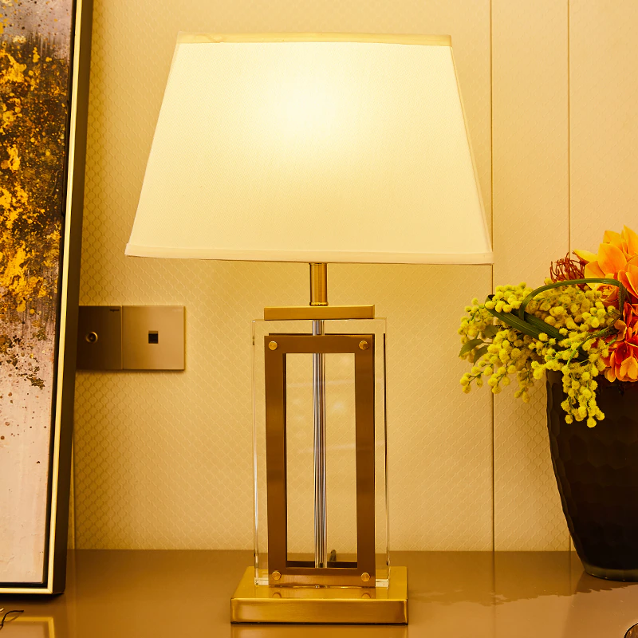

|  |
|---|
| RSE-022 |
RSE-022 is a crystal table lamp bearing a trapezoid-shaped shade over the bulb. RSE-022 is one of the Agents of Chaos created by RSE-010 in the year 13██. RSE-022 exhibits signs of sentience and displays an exceptionally hostile nature. RSE-022 is incapable of being destroyed, and any slight indicators of damage cannot be observed. Efforts to ascertain the composition and properties of RSE-022 have been met with challenges. While conventional observation techniques have been unable to detect any discernible damage or alterations, its resilience implies the presence of unconventional mechanisms.
RSE-022 is capable of instantaneously relocating itself horizontally every minute to anywhere it chooses in a 10 meter radius of its starting position. This ability defies the limitations of physical barriers, allowing it to bypass any obstacle or wall instantly. RSE-022 exhibits the capacity to exploit its teleportation ability as a lethal means, effectively materializing within living organisms to inflict fatal harm, as the subject’s internal organs are displaced to make room for RSE-022.
RSE-022 is held within a small room with each surrounding wall being 50 meters thick. A trapdoor is positioned at the top of the chamber, which is intended to exploit RSE-022's known limitations, namely its inability to travel vertically. It is important to acknowledge that the chosen design assumes a static nature of RSE-022, wherein its teleportation ability is limited to horizontal movements within a 10-meter radius. Further research is required to evaluate any potential adaptive behaviors or unanticipated developments that could compromise the effectiveness of the containment chamber.